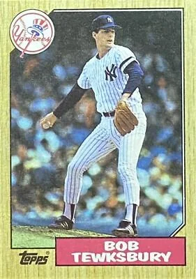
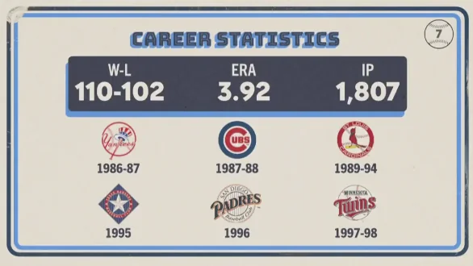

Bob Tewksbury
Career Highlights & Facts
(Facts are AI-generated and may require verification)
- A master of the strike zone, this pitcher was renowned for his extreme control and ability to induce weak contact rather than relying on high-velocity strikeouts.
- Drafted by the Yankees in the early eighties, he eventually earned a selection to the Midsummer Classic as a reward for his elite command.
- His departure from the Bronx was marked by a trade that brought a veteran outfielder to New York in exchange for his services.
Would you like to find out more about Bob Tewksbury?
Career Totals
| WAR | W | L | ERA | G | GS | SV | IP | SO | WHIP |
|---|---|---|---|---|---|---|---|---|---|
| 20.8 | 110 | 102 | 3.92 | 302 | 277 | 1 | 1807.0 | 812 | 1.292 |
Statistics via Baseball-Reference.com
The Original Clue
